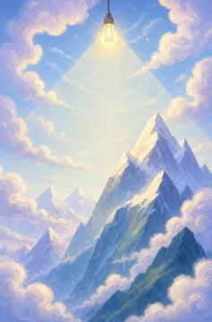
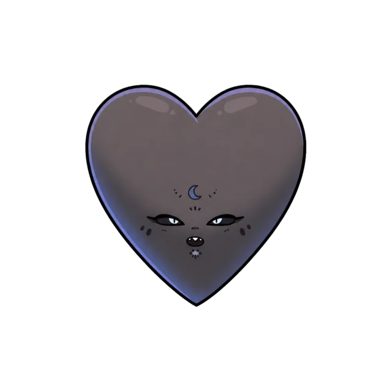

Ball is God?! סובב את המגדל. היה הפגיעה.
ארקייד הארדקור של ירידה אנכית, שבו גרירה אופקית מסובבת את המגדל סביב Espa הנופל. דלגו על נחיתות בטוחות, טענו מהלומת קומבו ופרצו דרך עולם מיתי שבו פגיעה אחת לא מוגנת מסיימת את הריצה.
הפקה פעילה: עשר סצנות מיקום, בוסים, דיאלוג מסתעף ושבילי קארמה שמשנים את חוקי המשחק.
סובבגרור את המגדל סביב Espa
סיכוןדלג על שלוש נחיתות בטוחות
מהלומהלפרוץ דרך הפלטפורמה
בתוך הגרסה הנוכחית
הקארמה משנה הרבה יותר מהדיאלוג.
מסלולי קארמה בהירים, ניטרליים וחשוכים משנים את התנהגות המגן, אזהרות התקיפה, תוקפנות האויבים ושלבי הבוסים, כך שהסיפור משנה את אופן המשחק שלכם.
סטטוס גרסה הפקה פעילהכל עשרת עולמות הדיאלוג
רקעי דיאלוג לכל עשרת העולמות, לפי סדר הירידה מ-Ena ועד Deka.





ממשק המשתמש הנוכחי של ההפקה
מסכי בחירת רמה, דיאלוג ותוצאות בגרסה הנוכחית.
זו הזרימה הנוכחית לפי הסדר שבו פוגשים אותה: בחירת רמה, דיאלוג, בחירה משמעותית, ואז ניצחון או מסך תבוסה נפרד. כל תמונה למטה משתמשת באמנות מפרויקט ה-Unity של ההפקה.
המסלול השמימי בוחר רמות שנוצרו על פני עשרה פרקים של 100 רמות.
תפריט ההפקה ממפה עשרה מיקומים בפרקים של 100 רמות ונפתח ישירות לריצה שנבחרה.
 201
201הדיאלוג מתרחש בתוך המיקום.
דיוקן הדמות, אמנות המיקום ושלט הדובר חולקים מסגרת אנכית אחת.


Shash
המשך, אם כן - אבל אל תחשוב שזה יהיה קל. Trials מחכים לכם שיגרמו לכל דבר קודם להיראות כמו זוטת ערך.
04 / בחירת אבן דרך
התשובה הופכת לחלק מהירידה.
ברמות המקומיות 90 ו-100, הפאנל הייעודי מבקש להחליט אם לחוס או להרוג לפני שהדיאלוג מכריע את הריצה.

חוס
הרוג
05 / תפריטי תוצאות
ניצחון ממשיך קדימה. תבוסה מחזירה לאותו אתגר.
לגרסה הנוכחית יש שני מצבי תוצאה נפרדים: PanelWin מציע לשחק שוב או לעבור לרמה הבאה, ואילו PanelOver שומר על פעולה אחת ברורה למשחק חוזר.
ניצחון · PanelWin
הירידה הושלמה
 שחק שוב
הבא
שחק שוב
הבא
שחק שוב
הבא
דמויות הדיאלוג
פנים שפוגשים בדרך למטה.
להלן כל 25 הדמויות שיש להן צמדי דיוקנאות הפקה תקינים במצב פתוח וסגור. העבירו את הסמן מעל כרטיס או התמקדו בו כדי להחליף הבעה.




סקירת משחק
Ball is God?! הוא משחק ארקייד הארדקור על נפילה דרך מגדל מסתובב.
הרעיון
הובילו את Espa במורד מגדל אלוהי. טעות אחת יכולה לסיים את הריצה, והבחירות הגדולות שלכם משנות את אופן המשחק בעולם.
גרסה נוכחית
עשר סצנות מיקום, יצירה פרוצדורלית של מגדלים, מהלומת קומבו, מגן בהחלקה, תצורות בוסים, דיאלוג מסועף, תפריטי הפקה ודיוקנאות מוכנים להחלפת הבעות כבר מיושמים.
קהל
שחקנים שאוהבים משחקי ארקייד קשוחים בנייד, תזמון של סיכון ותגמול ובוסים, עם סיפור שאפשר לעקוב אחריו.
סטטוס
הפקה פעילה. העבודה האחרונה כוללת מערכות זמן ריצה, אמנות עולמות, בדיקות והאופן שבו המשחק מרגיש בטלפון.
תכונות
מה עושים ב-Ball is God?!
ירידה בגרירה לסיבוב
גרירה אופקית מסובבת את המגדל סביב Espa הנופל אוטומטית, ומכוונת פתחים, סכנות ופלטפורמות בטוחות.
לחץ ארקייד הארדקור
מכה אחת בלי הגנה מסיימת את הריצה, ולכן צריך לקרוא את המגדל ולתזמן כל מהלך.
בוסים ועולמות מיתיים
עשר סצנות מיקום, לכל אחת הבוסים שלה, מובילות את הסיפור מעולם אחד לבא.
בחירות שמשנות את החוקים
רחמים, כוח וקארמה משנים את הדיאלוג, חוקי המגן, תוקפנות האויבים, אזהרות התקיפה ושלבי הבוסים.
לולאת משחק
אופן המשחק ב-Ball is God?!
- שלב 01קרא את הירידה
סרקו את הפלטפורמות, הפערים והמפגעים הבאים וחפשו חלונות תזמון בטוחים בזמן הנפילה.
- שלב 02סובב את המגדל
גרירה אופקית מסובבת את העולם סביב Espa, ומיישרת מולו פלטפורמה בטוחה או מרווח מכוון.
- שלב 03סיכון ומהלומה
דלגו על שלוש פלטפורמות כדי לטעון מהלומת קומבו, ואז פרצו דרך המבנים בזמן שהמגן מגן מפני טעות קטלנית אחת.
- שלב 04בחר את התוצאה
רחמים וכוח מעצבים את הקארמה, את הדיאלוג ואת חוקי המשחק שעוברים אל האויבים והבוסים.
סיפור / עולם
מגדל מיתי שבו הבחירות שלך מלוות אותך כל הדרך למטה.
Ball is God?! התחיל מקסם ילדות למשחקי ארקייד של ירידה אנכית לנייד: קריאת מרווחים, תגובה מהירה והישרדות מתוך אינסטינקט.
הפורמט יכול היה לשאת עוד: בוסים, דמויות עם אופי, סיפור ומתח מוסרי. הפרויקט הנוכחי עוקב אחרי Espa דרך עשר סצנות מיקום ודמויות מוזרות, עם בחירות שמשנות גם את הסיפור וגם את המשחק.
כך שהמטרה הפכה לארקייד ירידה אנכית פשוט, עם הלחץ של קרב בוס וההשלכות של משחק תפקידים מבוסס סיפור.
- חזון
- ארקייד עם מגדל מסתובב וסיפור מיתי
- היקף העולם הנוכחי
- עשרה מיקומים ותצורות בוס
- שלב הסיפור
- טיוטה מלאה של סיפור ארוך
- מצב ההפקה
- הפקה פעילה
במבט חטוף
בקרת גרירה פשוטה, עם סיפור שמשנה את החוקים.
בקרת הגרירה לסיבוב מיידית. השאר מגיע מעולמות מיתיים, בוסים ובחירות שמשנות את מהלך המשחק.
הגרסה הנוכחית כבר משלבת יצירה דטרמיניסטית של מגדלים, ניפוץ של סיכון ותגמול, כישלון במכה אחת, בוסים, דיאלוג מסתעף וקארמה שמשנה את המשחק.
- ז'אנר
- ארקייד ירידה אנכית מבוסס סיפור
- יעד פלטפורמה
- iOS / Android
- מבנה המפגש
- סבבים מהירים מבוססי מיומנות
- סטודיו
- WillowinWorlds
הורד חומרים
חומרי עיתונות ויוצרים של Ball is God?!
תצוגות מקדימות בפורמט WebP לסיקור עיתונאי, לסקירת מוציאים לאור ולהתייחסות בעמודי חנויות. קבצי מקור ברזולוציה מלאה זמינים לפי בקשה.
מותג ודמויות
סמל המשחק ובנוסף כל 25 הדמויות הנוכחיות שיש להן דיוקנאות דיאלוג מלאים מההפקה. השמות תואמים למפתחות הלוקליזציה ב-Unity.
Espaדיוקן דמות השחקן.
Revlaדיוקן דיאלוג הפקה.
Shashדיוקן דיאלוג הפקה.
Shushדיוקן דיאלוג הפקה.
Shishדיוקן דיאלוג הפקה.
Gigoדיוקן דיאלוג הפקה.
Gogaדיוקן דיאלוג הפקה.
Gigaדיוקן דיאלוג הפקה.
Askoldדיוקן דיאלוג הפקה.
Mirasדיוקן דיאלוג הפקה.
Hihדיוקן דיאלוג הפקה.
Hehדיוקן דיאלוג הפקה.
Hahדיוקן דיאלוג הפקה.
Musyaדיוקן דיאלוג הפקה.
Dusyaדיוקן דיאלוג הפקה.
Susyaדיוקן דיאלוג הפקה.
Vladusדיוקן דיאלוג הפקה.
Frishaדיוקן דיאלוג הפקה.
Lurenדיוקן דיאלוג הפקה.
Kurenדיוקן דיאלוג הפקה.
Don Yagonדיוקן דיאלוג הפקה.
Luryaדיוקן דיאלוג הפקה.
Khleyaדיוקן דיאלוג הפקה.
Varonדיוקן דיאלוג הפקה.
Whiteדיוקן דיאלוג הפקה.
רקעי תפריט
גרפיקת ההפקה הנוכחית המשמשת את מערכת בחירת הרמות השמימית.
 תפריט שמיימי
תפריט שמיימי
עולמות הירידה האנכית
סט שלם של עשרת רקעי המיקומים הנוכחיים, מסודרים מ-Ena ועד Deka.
 01 · עולם השמיםרקע הירידה האנכית של Ena.
01 · עולם השמיםרקע הירידה האנכית של Ena.
 02 · עולם החללרקע הירידה האנכית של Dyo.
02 · עולם החללרקע הירידה האנכית של Dyo.
 03 · עולם הסערהרקע הירידה האנכית של Tria.
03 · עולם הסערהרקע הירידה האנכית של Tria.
 04 · עולם השלגרקע הירידה האנכית של Tessera.
04 · עולם השלגרקע הירידה האנכית של Tessera.
 05 · עולם הר הגעשרקע Pente; מונפש במשחק.
05 · עולם הר הגעשרקע Pente; מונפש במשחק.
 06 · עולם האוקיינוסרקע הירידה האנכית של Eksi.
06 · עולם האוקיינוסרקע הירידה האנכית של Eksi.
 07 · עולם המדבררקע הירידה האנכית של Epta.
07 · עולם המדבררקע הירידה האנכית של Epta.
 08 · עולם היעררקע הירידה האנכית של Ohto.
08 · עולם היעררקע הירידה האנכית של Ohto.
 09 · עולם המערותרקע הירידה האנכית של Ennea.
09 · עולם המערותרקע הירידה האנכית של Ennea.
 10 · עולם הגיהנוםרקע הירידה האנכית של Deka.
10 · עולם הגיהנוםרקע הירידה האנכית של Deka.
רקעי ארקייד סיפור
סט שלם של מיקומי הדיאלוג: היכל האור ובנוסף רקעים לכל עשרת העולמות.
 00 · אולם האוררקע דיאלוג פתיחה.
00 · אולם האוררקע דיאלוג פתיחה.
 01 · דיאלוג שמייםרקע סיפור Ena.
01 · דיאלוג שמייםרקע סיפור Ena.
 02 · דיאלוג בחללרקע סיפור Dyo.
02 · דיאלוג בחללרקע סיפור Dyo.
 03 · דיאלוג סערהרקע סיפור Tria.
04 · דיאלוג שלגרקע סיפור Tessera.
03 · דיאלוג סערהרקע סיפור Tria.
04 · דיאלוג שלגרקע סיפור Tessera.

 05 · דיאלוג הר געשרקע סיפור Pente.
05 · דיאלוג הר געשרקע סיפור Pente.
 06 · דיאלוג באוקיינוסרקע סיפור Eksi.
06 · דיאלוג באוקיינוסרקע סיפור Eksi.
 07 · דיאלוג מדברירקע סיפור Epta.
07 · דיאלוג מדברירקע סיפור Epta.
 08 · דיאלוג יעררקע סיפור Ohto.
08 · דיאלוג יעררקע סיפור Ohto.
 09 · דיאלוג מערהרקע סיפור Ennea.
09 · דיאלוג מערהרקע סיפור Ennea.
 10 · דיאלוג גיהינוםרקע סיפור Deka.
10 · דיאלוג גיהינוםרקע סיפור Deka.
שאלות נפוצות על Ball is God?!
שאלות נפוצות על Ball is God?!
איזה סוג של משחק הוא Ball is God?!
ארקייד הארדקור של ירידה אנכית. מסובבים מגדל סביב Espa הנופל, מדלגים על נחיתות בטוחות כדי לטעון מהלומות ופורצים דרך עולמות מיתיים.
איך משחקים ב-Ball is God?!
גררו אופקית כדי לסובב את המגדל, דלגו על שלוש פלטפורמות כדי לטעון מהלומה, והחליקו אנכית כשהמגן עם זמן הקירור צריך לספוג פגיעה קטלנית.
האם Ball is God?! כבר יצא?
עדיין לא. הוא בהפקה פעילה בכל החזיתות: מערכות זמן ריצה, אמנות עולמות, תוכן סיפורי ובדיקות. אין תאריך שחרור ציבורי. פלטפורמות היעד הן iOS ו-Android.
מה מייחד את Ball is God?! משאר המשחקים?
היא משלבת לחץ ארקייד של סיכון ותגמול עם עשרה מיקומים וקארמה שמשנה את הדיאלוג, האויבים, אזהרות התקיפה, המגנים והבוסים.
מי יוצר את Ball is God?!
WillowinWorlds, סטודיו עצמאי שיוצר משחקי פאזל וארקייד לנייד.
חומרי העיתונות של Ball is God?! - אפשר להשתמש בהם?
כן, לעיתונות, לסקירת מוציאים לאור ולהתייחסות בחנויות. קבצי המקור נשארים פרטיים אלא אם תבקשו אותם מאיתנו.
Ball is God?! Devlog
מה השתנה ומתי
- אימות משטחי עולם ומפגעים
הצגת הדמויות, היצירה הדטרמיניסטית ומפגעי הקוצים עברו סבב משולב של שיפור חזותי ובדיקת תקינות.
- יולי 2026מעבר על ממשק ההפקה והדמויות
בחירת רמה, בקרות פעולה משותפות, מסגור אנכי של הדיאלוג והבעות דמות זוגיות נמצאים עכשיו במקומם.
- פברואר 2026סקירת היקף הפרויקט
הצוות השלים מעבר גדול של שילוב סיפור וסקר את ההיקף המלא של הפרויקט: עשרה עולמות, בחירות מוסריות, בוסים וסופים מרובים.
- אפריל-מאי 2025שכתוב סיפור ויכולות
הסיפור המלא שוכתב מחדש, יכולות הדמויות שופרו וההשלכות המוסריות הפכו לברורות יותר.
- אוגוסט 2024בימוי הסיפור מתחיל
הצוות החליט ש-Ball is God?! צריך להיות יותר מארקייד ירידה פשוט, והוסיף סיפור מיתי וחזון של בחירות מוסריות.
- יולי 2024קונספט מקורי
הפרויקט התחיל כרעיון המשחק הראשון של הסטודיו: משחק ארקייד אנכי מהיר על נפילה דרך מגדל אלוהי.
- גרסה נוכחיתארקייד וסיפור בגרסה אחת
ירידה במגדל מסתובב, מהלומת קומבו, מגן החלקה, בוסים, דיאלוג וקארמה עובדים עכשיו יחד בגרסה אחת.